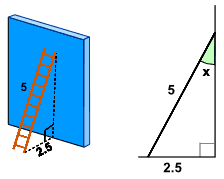
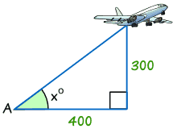
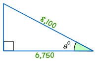

Finding an Angle in a Right Angled Triangle
Angle from Any Two Sides
We can find an unknown angle in a right-angled triangle, as long as we know the lengths of two of its sides.

Example
The ladder leans against a wall as shown.
What is the angle between the ladder and the wall?
The answer is to use Sine, Cosine or Tangent!
But which one to use? We have a special phrase "SOHCAHTOA" to help us, and we use it like this:
Step 1: find the names of the two sides we know

- Adjacent is adjacent to the angle,
- Opposite is opposite the angle,
- and the longest side is the Hypotenuse.
Example: in our ladder example we know the length of:
- the side Opposite the angle "x", which is 2.5
- the longest side, called the Hypotenuse, which is 5
Step 2: now use the first letters of those two sides (Opposite and Hypotenuse) and the phrase "SOHCAHTOA" to find which one of Sine, Cosine or Tangent to use:
SOH... |
Sine: sin(θ) = Opposite / Hypotenuse |
...CAH... |
Cosine: cos(θ) = Adjacent / Hypotenuse |
...TOA |
Tangent: tan(θ) = Opposite / Adjacent |
In our example that is Opposite and Hypotenuse, and that gives us “SOHcahtoa”, which tells us we need to use Sine.
Step 3: Put our values into the Sine equation:
Sin (x) = Opposite / Hypotenuse = 2.5 / 5 = 0.5
Step 4: Now solve that equation!
sin(x) = 0.5
Next (trust me for the moment) we can re-arrange that into this:
x = sin-1(0.5)
And then get our calculator, key in 0.5 and use the sin-1 button to get the answer:
x = 30°
But what is the meaning of sin-1 … ?
Well, the Sine function "sin" takes an angle and gives us the ratio "opposite/hypotenuse",

But sin-1 (called "inverse sine") goes the other way ...
... it
takes the ratio "opposite/hypotenuse" and gives us an angle.
Example:
- Sine Function: sin(30°) = 0.5
- Inverse Sine Function: sin-1(0.5) = 30°
 |
On the calculator press one of the following (depending on your brand of calculator): either '2ndF sin' or 'shift sin'. |
On your calculator, try using sin and sin-1 to see what results you get!
Also try cos and cos-1. And tan and tan-1.
Go on, have a try now.
Step By Step
These are the four steps we need to follow:
- Step 1 Find which two sides we know – out of Opposite, Adjacent and Hypotenuse.
- Step 2 Use SOHCAHTOA to decide which one of Sine, Cosine or Tangent to use in this question.
- Step 3 For Sine calculate Opposite/Hypotenuse, for Cosine calculate Adjacent/Hypotenuse or for Tangent calculate Opposite/Adjacent.
- Step 4 Find the angle from your calculator, using one of sin-1, cos-1 or tan-1
Examples
Let’s look at a couple more examples:

Example
Find the angle of elevation of the plane from point A on the ground.
- Step 1 The two sides we know are Opposite (300) and Adjacent (400).
- Step 2 SOHCAHTOA tells us we must use Tangent.
- Step 3 Calculate Opposite/Adjacent = 300/400 = 0.75
- Step 4 Find the angle from your calculator using tan-1
Tan x° = opposite/adjacent = 300/400 = 0.75
tan-1 of 0.75 = 36.9° (correct to 1 decimal place)
Unless you’re told otherwise, angles are usually rounded to one place of decimals.

Example
Find the size of angle a°
- Step 1 The two sides we know are Adjacent (6,750) and Hypotenuse (8,100).
- Step 2 SOHCAHTOA tells us we must use Cosine.
- Step 3 Calculate Adjacent / Hypotenuse = 6,750/8,100 = 0.8333
- Step 4 Find the angle from your calculator using cos-1 of 0.8333:
cos a° = 6,750/8,100 = 0.8333